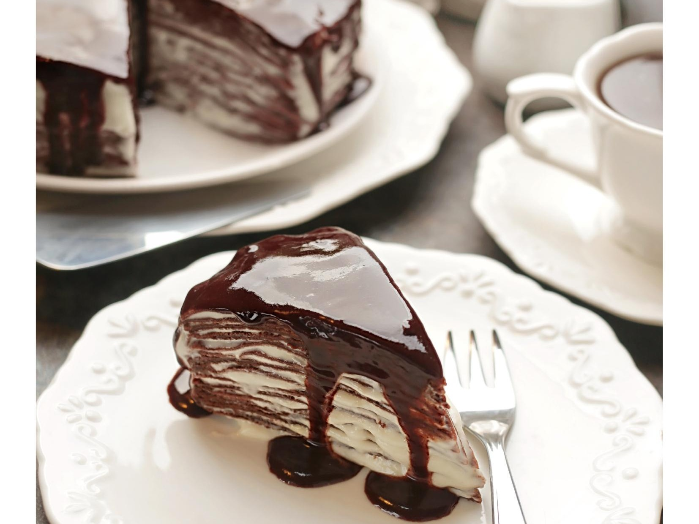

Блинные торты – это не новое изобретение. Особую любовь
к блинам, точнее к крепам, питают во Франции, где еще в начале прошлого века придумали чудесный торт «Крепвиль».
По сути он состоит из множества блинов и тонких слоев крема.
Причем начинка и крем для торта могут быть самые разные: в «Крепвиль» кладут варенье или свежие ягоды, желе или ломтики бананов, украшают тоже чем угодно, от тертого шоколада и орехов до ягод и крошки от подпеченных обрезков блинов.
Один из вариантов крема для «Крепвиля» – взбитые сливки.
Можно немного его усовершенствовать и, к примеру, смешать взбитые сливки с сыром маскарпоне или сделать крем «пломбир», по вкусу напоминающий подтаявшее мороженое. Можно взять заварной крем, творожный, сметанный или любой другой, но главное, чтобы он был достаточно влажным, чтобы пропитать блины.
Торт не обязательно собирать в кольце, вполне можно обойтись и без этого, просто при необходимости подровнять потом края.
Но при сборке в кольце торт получится более устойчивым и аккуратным.
«Крепвиль» можно приготовить с любыми бездрожжевыми блинчиками. Главное помнить, что чем тоньше блинчики, тем нежнее получится торт.
для блинов:
для крема:
для шоколадной глазури: